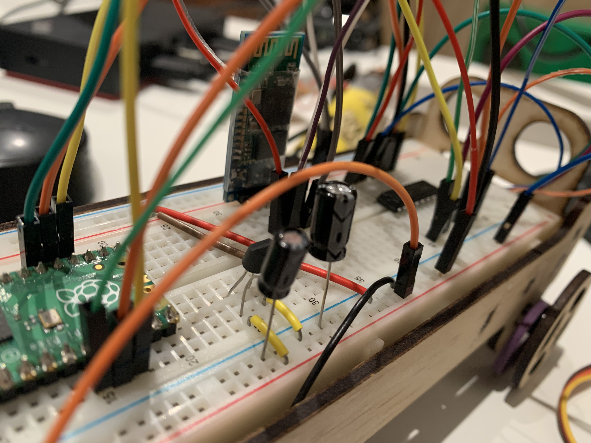
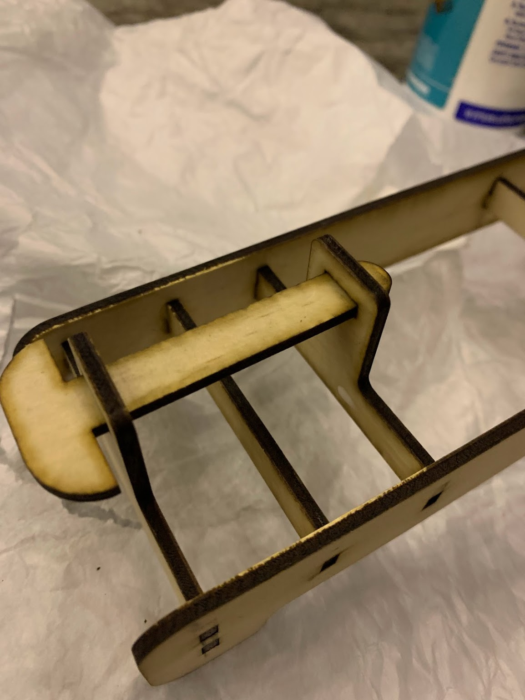
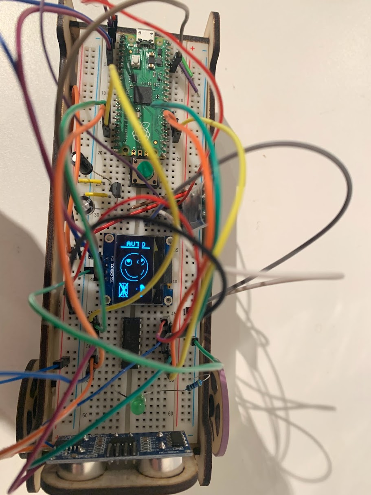

When I was first learning to use programmable electronics I purchased one of the many 'Arduino starter kits', which contained the microcontroller and a variety of sensors, a display, and a servo. This was helpful to start, but it only got so far. I was able to put it together, but the instructions and videos only really told me how to put it together, not what I was doing or why it worked. Years later, I am now designing a starter kit of my own which I hope will provied others with the tools and knowledge I had to scrounge for myself.
After doing some brainstorming I came up with the following things I wanted to have included in my kit, that aren't in many others:
On top of all this I wanted those using my kit to get an impressive and satisfying project at the end (rather than a series of random and disconnected demonstrations), so all the individual components would add together to one bigger robot.
I started with the individual components. The first I worked on was power management. For this I used a 3.3V regulator to provide power to the microcontroller and also the logic voltage for the motor driver. This would allow me to power the circuit with a 4-6 AA batteries. The voltage regulators (and the calculations involved with them) will also give users an introduction into controlling power.
Next I moved to the motor driver IC. I was using a L293D IC which is a very commonly used IC (and is the basis of many 'plug and play' motor driver units). After soldering some jumper wires to the motors and hooking the Raspberry Pi Pico up the citcuit was ready to go, and worked well!
Now I had a few of the components sorted it was time to lasercut a frame. By this point I already knew the bulk of the electronics would be contained on a breadboard, so I needed to make my frame around that. I also had to make room for the other sensor I had decided to put in: an ultrasonic distance sensor.
I drew up a frame on Adobe Illustrator, then sent it to my laser cutter.
The holes when I made them were a little too large, so after gluing the pieces together I had a functional frame.
After the glue had dried I assembled the voltage regulator, motor driver, and microcontroller on the circuit, then inserted the motors and fed the wires through the frame back to the breadboard.
Adding bluetooth was a bit of a pain. Not on the electronics side, that was fairly simple as serial communication is a robust and much used system. The difficult bit was choosing which app to use. After downloading a dozen on both iPhones and Android apps, I can recommend 'Bluetooth for Arduino for iOS and 'Serial Bluetooth Terminal' for Android. The latter is the better app by far, but the former is usable too.
I couldn't wait to take my robot for a spin, so before I put the rest of the sensors in I wrote a quick program to test out its agility. I had previously pulled one of the motors apart (completely by accident) as I was fitting it into the robot, and though I put it together, I must have damaged it in the process - so one motor was very weak. But regardless, it worked.
Using the OLED was a fun challenge. I'm using the microPython ssd1306 library so the programming side was easy, so the biggest problem was designing what to put on it. Rather than programming individual pixels I chose to use the online program [Pixilart](https://www.pixilart.com/) to make my graphics. I then downloaded them as jpgs, and wrote a Python program to convert all the images into a list of points, which I could give to the microcontroller. This worked well, and I soon had a working screen with graphics.
Once the circuits were largely complete I began to consider the mechanical side of the kit again, and decided to redesign the steering. Instead of having two DC motors for both power and steering, I would have DC one motor for power, and a servo motor for steering. After some designing I was able to put together a solidworks model and lasercut the steering mechanism and drive train, which worked very nicely.
I did not laser-cut the middle section in case I had to make adjustments to either side, so for now this prototype is held together by two pieces of wooden dowel. I have to make a few minor adjustments to the electronics now I'm using a 3V motor and a servo rather than two (tiny) 12V motors, but that shouldn't take long. Then I can get on to user testing and tutorial filming.